Réseau social perso
osCompaneros est une application web de type réseau social développée avec une approche complète et moderne. Elle offre une interface dynamique et immersive, pensée pour une expérience utilisateur fluide aussi bien sur ordinateur que sur mobile. L’utilisateur peut créer un compte, se connecter, personnaliser son profil, interagir avec ses amis via un mur de publication et échanger des messages en temps réel grâce à un système de chat privé et public basé sur WebSocket. L’application repose sur une architecture full-stack JavaScript avec Express.js pour le serveur, MongoDB pour la base de données, et WebSocket pour les interactions en direct. La sécurité des données est assurée par un système de cryptage. Elle est hébergée via Render, avec une base de données déployée sur MongoDB Atlas. Ce projet met en œuvre des fonctionnalités clés d’un réseau social tout en assurant une bonne performance, une responsivité efficace et une esthétique arcade rétro via des styles CSS personnalisés.
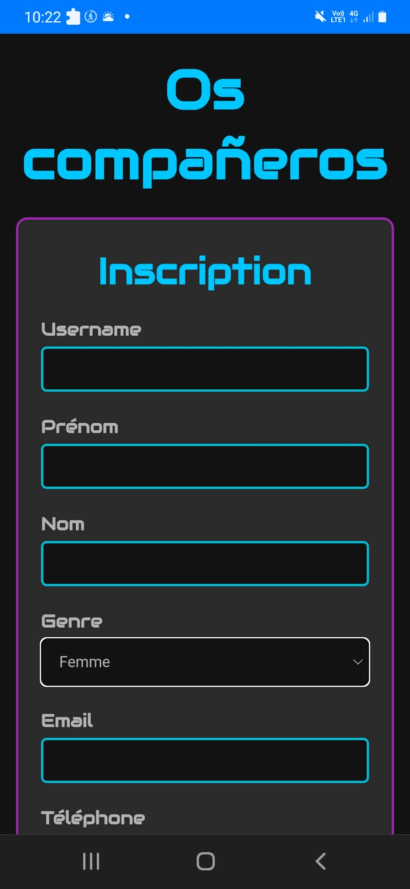
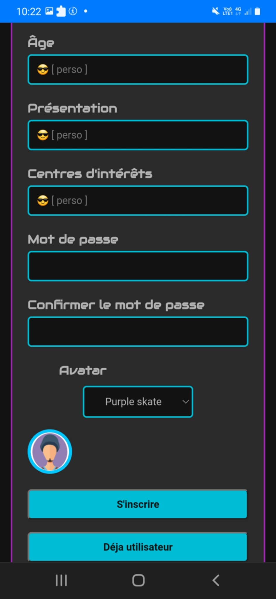
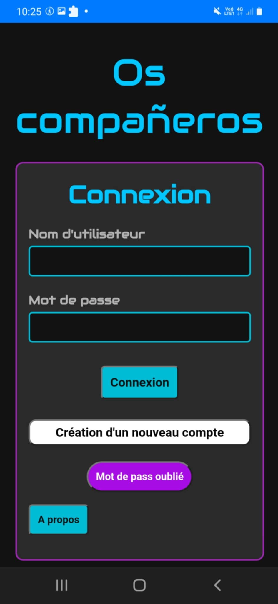
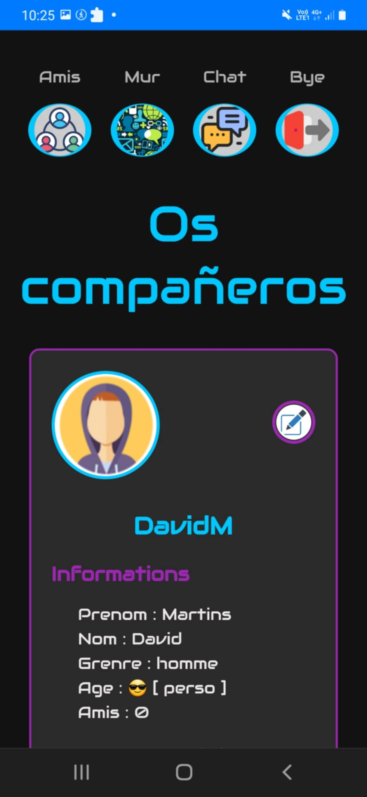
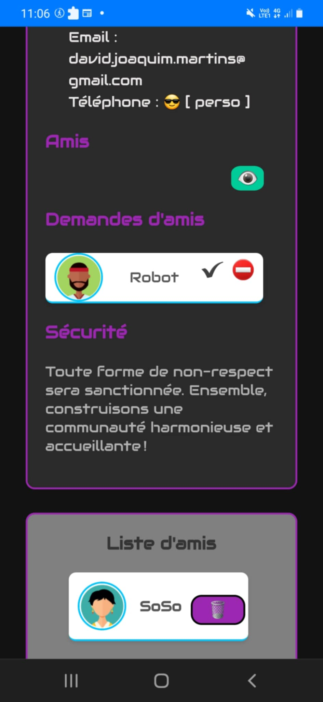
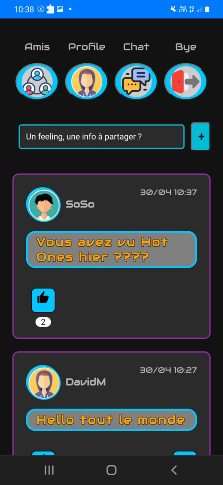
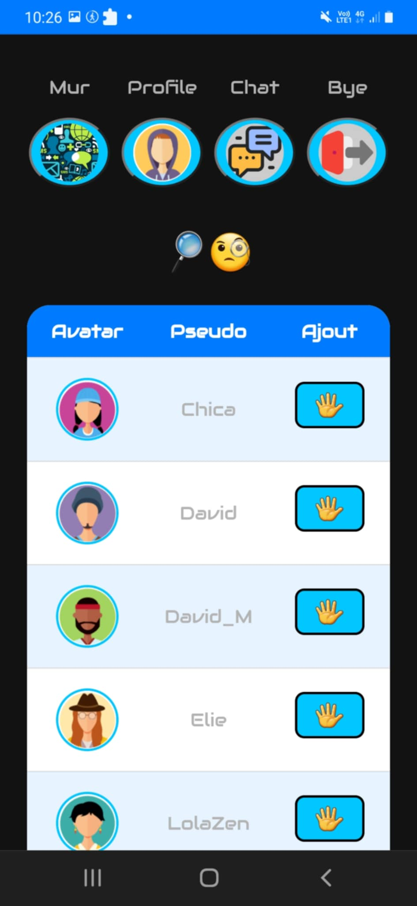
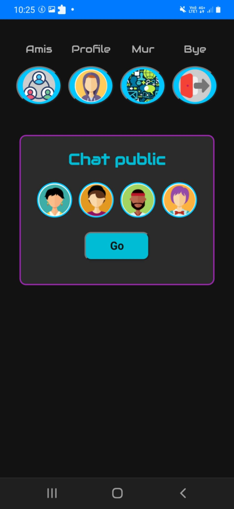
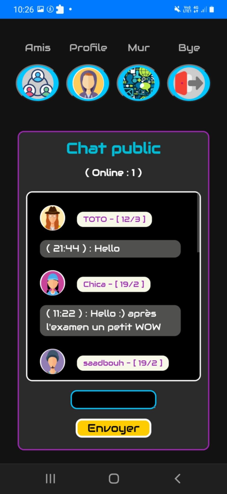
Jeu Vidéo Front-End avec Niveaux Dynamiques
Un jeu entièrement en front-end offrant plusieurs niveaux de difficulté et utilisant des sprites animés pour un rendu visuel dynamique et immersif.
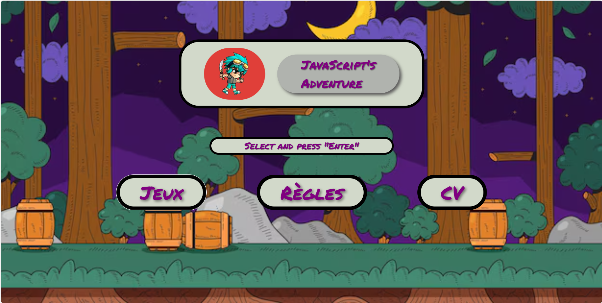
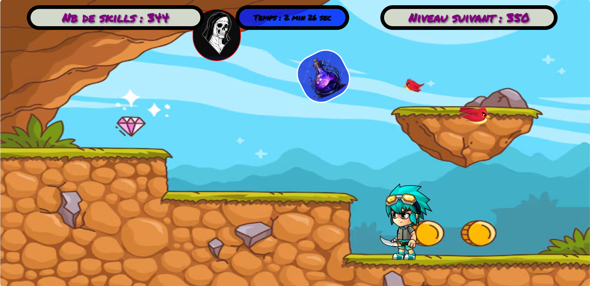
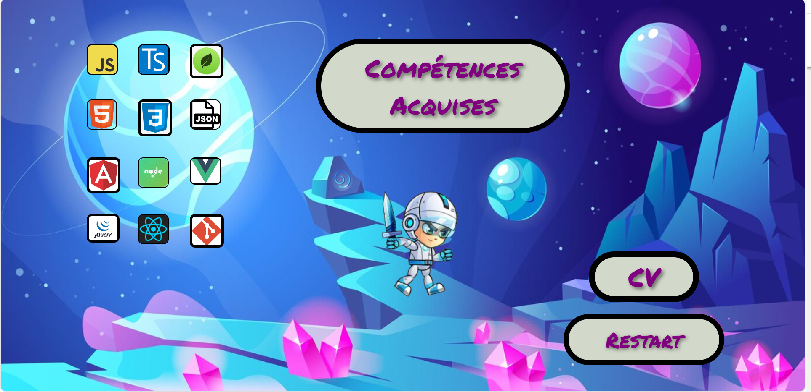
Jeu Multijoueur en Ligne
Un jeu de cartes multijoueur en temps réel où les joueurs s'affrontent dans une partie de bataille. L'application utilise WebSocket pour des interactions instantanées, comprend un chat intégré pour discuter avec l'adversaire, et enregistre toutes les données sur une base de données en ligne. Un classement des joueurs permet de suivre les scores et performances en continu.
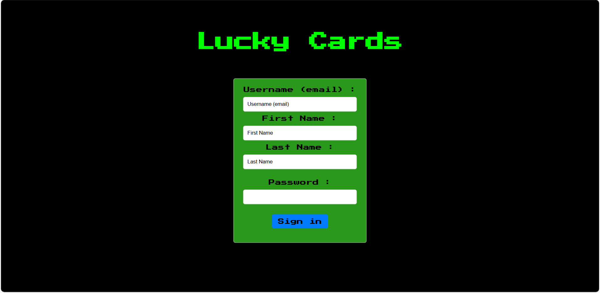
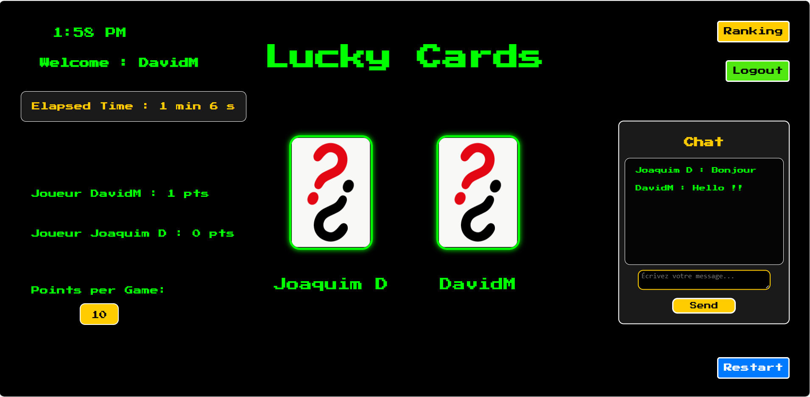
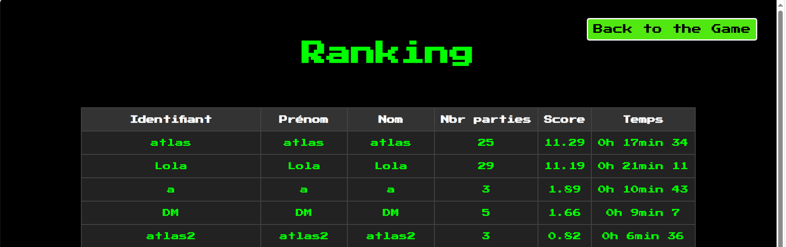
Application Météo avec Localisation Personnalisée
Cette application interagit avec des API Open Data pour fournir des informations météorologiques précises. Elle vous localise automatiquement ou vous permet de sélectionner un lieu de votre choix pour connaître les prévisions en temps réel.
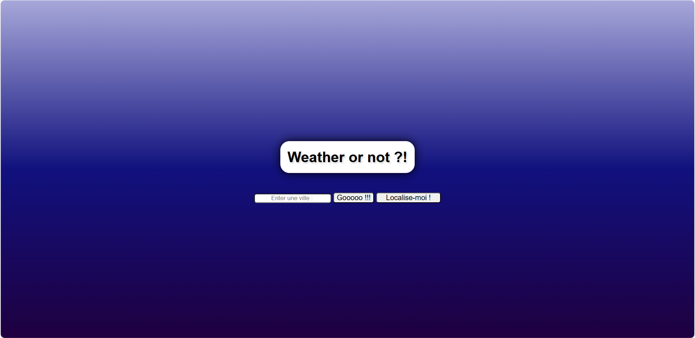
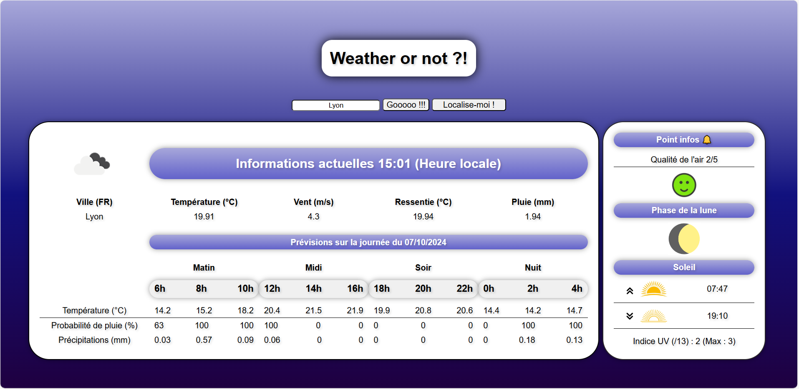
Application Collaborative de Gestion de Tâches et Liste de Courses
Une application collaborative en temps réel où les utilisateurs peuvent ajouter et consulter des tâches, avec des informations détaillées telles que la priorité, la date d'échéance, et la personne responsable. Elle inclut également une liste de courses partagée, que chaque utilisateur peut compléter ou mettre à jour en supprimant les éléments une fois qu'ils sont achetés. L’application synchronise automatiquement toutes les informations sur les appareils connectés pour une gestion efficace et à jour.
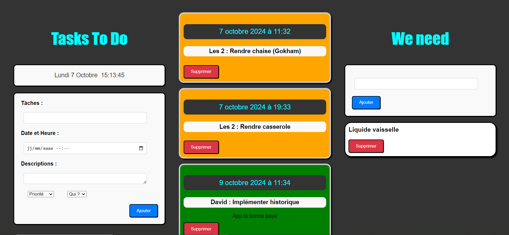
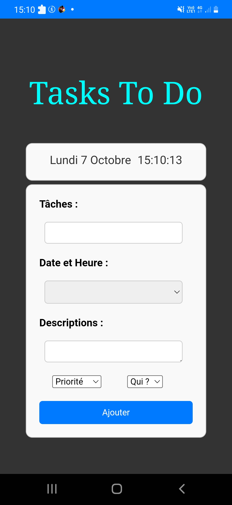
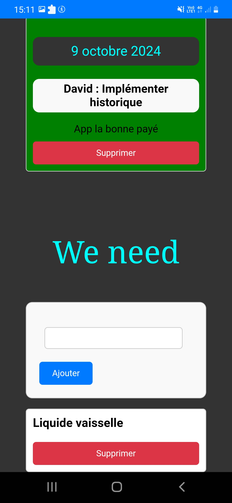